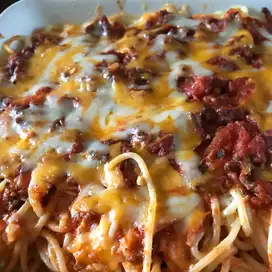

Spaghetti

Description:
This is a delightful family recipe that will warm any heart.
You and your familiy will LOVE it!
Ingredients:
- 1 (16 ounce) package lasagna noodles
- 1 pound lean ground beef
- salt and pepper to taste
- 1 (16 ounce)jar spaghetti
- 1 clove garlic, minced
- 1/2 pound shredded mozzarella cheese
- 1/2 pound shredded cheddar cheese
- 1 pint ricotta cheese
Steps:
- Bring a large pot of lightly salted water to a boil.
- Add pasta and cook for 8 to 10 minutes; drain.
- Preheat oven to 350 degrees F (175 degrees C).
- In a large skillet over medium heat, brown beef and season with salt and pepper; drain.
- Stir in spaghetti sauce and garlic and simmer 5 minutes.
- In a medium bowl, combine mozzarrela, cheddar and ricotta; stir well.
- In a 9 x 13 inch pan, alternate layers of noodles, meat mixture and cheese mixture until pan is filled.
- Bake in a preheated oven for 30 minutes, or until cheese is melted and bubbly.